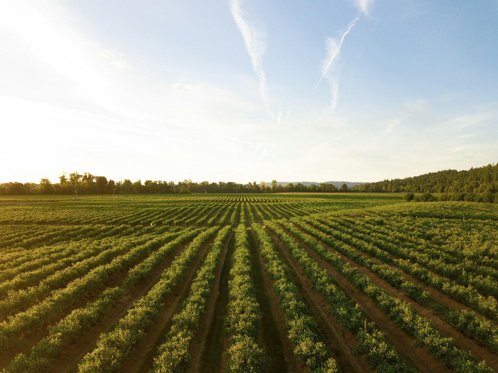

Read the ground
A recent soil trend gives the watering decision context.
For commercial farms and irrigation cooperatives. Rill combines soil readings, weather forecasts and crop stage to estimate the next watering need for each zone.

Confirm the sensor and the pump limit before approving a watering cycle.
Water demand changes with the weather and crop stage. Each new forecast requires the model to reassess every active zone and compare the recommendation with available pump capacity.

A recent soil trend gives the watering decision context.
Crop stage, forecast weather and pump capacity belong in the next daily plan.
Compare the approved allocation with what the operator records at the flow meter.

The next watering decision depends on soil conditions, weather, crop stage and pump capacity. A calendar alone cannot explain which zone should receive attention first.
Read the operating problemChange the available budget and reserve. This planning tool shows the resulting allocation; it is not a live irrigation command.
Agree the baseline and review the result with the person responsible for the work.
Compare operator records and flow-meter readings with the dated zone plan.
Use time-separated evaluation periods and record missing sensor or weather inputs.
Include the manager’s review and any changes required by pump or water limits.
Compare two time assumptions for daily zone plans. The estimate is calculated from your entries; it is not a measured customer result.
AI forecasts crop water demand and gives irrigation teams a daily zone plan. Choose a sample case and inspect the evidence behind the finding.
Zone 01, tomato, flowering stage. Latest soil moisture: 21%. Previous reading: 23%. Observation note: confirm the sensor before changing the watering cycle.
Evidence is prepared for this demonstration. Use the source reference to check the finding.See how the source becomes a specific question, a cited observation and a next action.
The initial strategy follows the teams already responsible for this review.
Combine soil and crop observations with the next weather period.
Compare zone demand with the agreed daily water budget.
Record flow-meter observations and investigate differences.
The review interface and source-linked reports are implemented. The model connection and sector data rollout have explicit milestones.
All development stagesChoose a case, inspect the sources and retain a reviewed report.
Assign review states, record observations and export the work.
Server-side credentials and a deployed compatible model are required for connected analysis.
Connect sensor readings and weather data; train and evaluate a field-specific demand model.
Irrigation operations stays central to the workflow. The project’s software and documentation have a named maintainer.
Team and responsibilitiesMaintains the published product source, working review interfaces and implementation documentation for Uniqkode.
Public project profileA farm operator checks sensor quality and local conditions before any watering decision. This MVP does not control pumps.